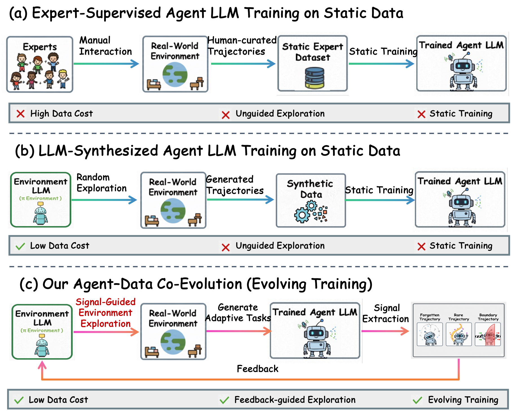
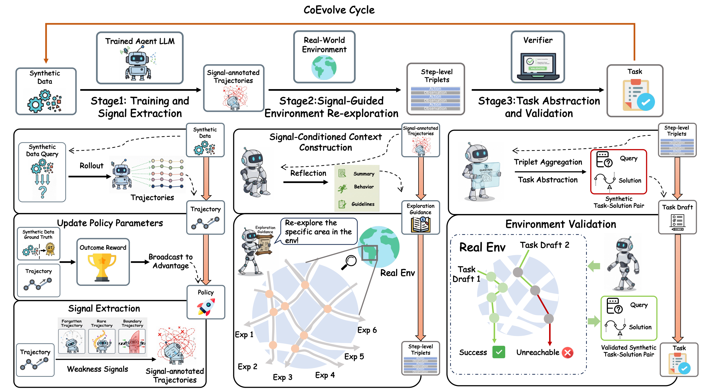
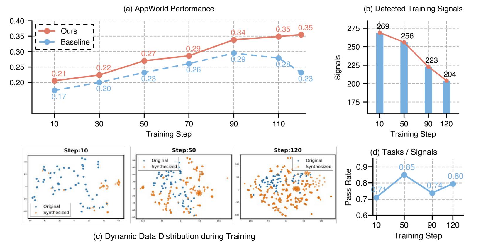
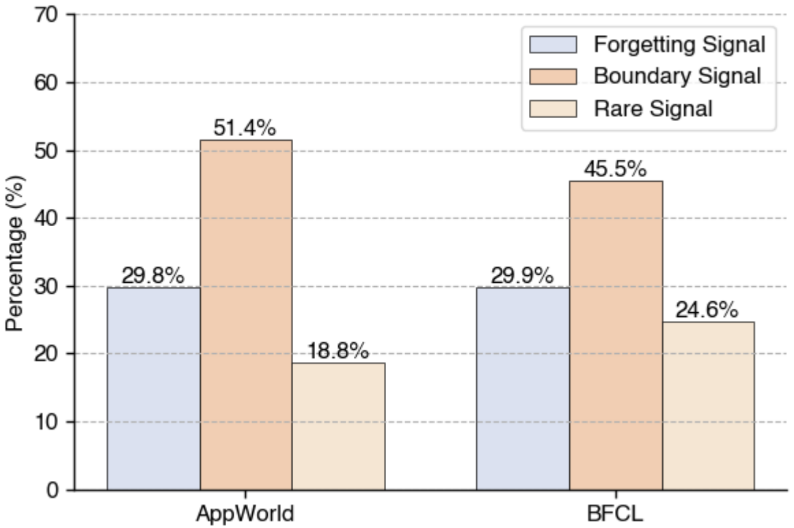
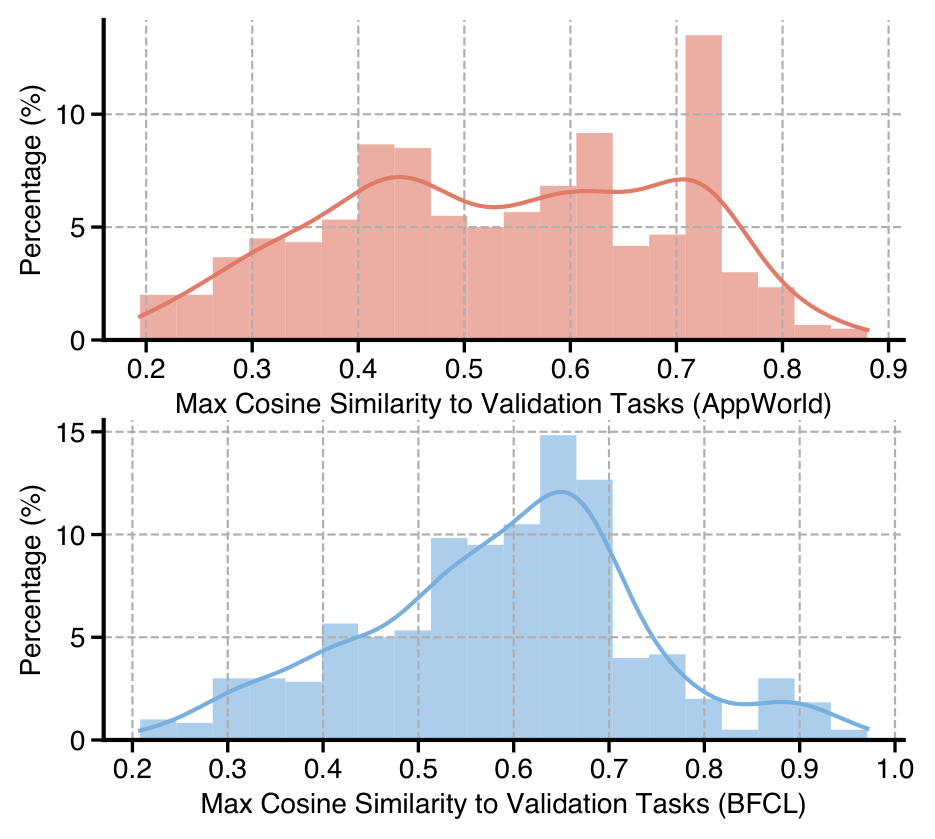

CoEvolve：让 agent 与训练数据在闭环反馈中相互进化
CoEvolve: Training LLM Agents via Agent-Data Mutual Evolution
①开源贡献 Open-source Artifacts
本文在首页明确给出官方仓库 github.com/AMAP-ML/CoEvolve（Apache-2.0）。截至解读日（2026-05-30），该仓库已建立但内容仍接近占位（placeholder）状态：含 README（项目介绍 + 引用 + 致谢）与 LICENSE，尚未见到可运行的训练/推理/评测脚本与配置；README 自述方法建立在 AgentEvolver（ModelScope）与 veRL（VolcEngine）之上，并受 CuES 启发。所用的两个 benchmark（AppWorld、BFCL）本身是第三方开源资产，可独立获取。下面区分「论文声称 / 实际可下载」。
| 类型 | 是否开源 | 内容 / 链接 |
|---|---|---|
| 代码 Code | ✔（仓库已建） | github.com/AMAP-ML/CoEvolve · Apache-2.0。当前仅 README + LICENSE，核心训练/反馈/合成代码尚未释出（声称基于 AgentEvolver + veRL 实现）。 |
| 模型权重 Weights | ✘ | 未发布。所用 backbone 为公开模型 Qwen2.5-7B-Instruct / Qwen3-4B-Instruct / Qwen3-30B-A3B-Instruct，但 CoEvolve 训练后的 checkpoint 未提供。 |
| 数据集 Dataset | ✘ | 未发布。训练数据由方法在线合成（初始 100 条 + 训练中持续生成并验证），论文未释出合成任务集。 |
| 环境 / Benchmark | ✘（非本文产出，可第三方获取） | AppWorld（Trivedi et al., 2024）、BFCL-V3（Patil et al., 2025）；附录另测 ALFWorld、WebShop。均为现有开源 benchmark，本文未新发布环境。 |
| 项目主页 / Demo | ✘ | 无独立项目主页 / 在线 demo；信息集中在 arXiv 与 GitHub 仓库。 |
②研究动机与贡献 Motivation & Contribution
背景与问题
训练能在开放环境里多步推理、调用工具、做 web/软件操作的 LLM agent，目前主流有两条数据路线，论文用 Figure 1 把它们和自己的方案并排画了出来：

- (a) 专家监督 / imitation learning：让人类专家手动与环境交互，构造 trajectory 数据集再训练 policy。痛点是——① 真实环境采一条 trajectory 往往要专家花数分钟乃至更久，成本高、专家时间稀缺，难以广覆盖地探索环境；② 更本质地，专家演示是交互模式的静态快照，覆盖不到真实场景的长尾变体。论文举例：一个 web 导航 agent，如果按钮文案从 "Book Now" 改成 "Reserve Now"，靠静态演示训练的 agent 可能就直接失败。
- (b) 合成数据 / open-loop synthesis：用 LLM 的世界知识去探索环境、生成合成 trajectory，确实减轻了对人工标注的依赖。但这种生成只由 LLM 的先验引导、随机探索，拿不到 agent 真实表现/交互信号的反馈，导致探索浅、覆盖不全；而且生成出来的数据仍是一份静态语料，无法随 agent 能力变化而调整——既不针对 agent 当前的弱点，也不支持持续改进，训练效率低。
一句话概括两者的共同病根：数据分布是静态的、与 agent 的演化脱钩的。Related Work 里作者进一步指出，即便是近期的 self-improving / curriculum 类方法，多数也只是在固定的 query 池上改写 trajectory 或围绕 seed task 生成变体，本质仍是 open-loop，没有把「探索→发现新的可执行 query/状态」这条回路接进训练。
本文的切入点
核心 insight：把训练数据当成一个会与 agent 一起进化的对象。既然 RL 训练过程中天然会产生大量 rollout trajectory，这些 trajectory 里其实编码了 agent「在哪里、以什么方式失败/不稳定」的信息——那就用 feedback signal 把这些失败易发（failure-prone）的交互模式识别出来，反过来驱动 LLM 回到环境里有针对性地再探索，把新发现的交互合成成新任务、验证后并回训练集。这样数据分布就能持续地瞄准 agent 当前的短板并随之漂移（data evolving），而 agent 又在不断被补强的数据上持续克服自身局限（agent evolving），二者形成闭环（Figure 1c）。整个过程不需要人工监督。
核心贡献
- 提出 CoEvolve——一个 agent-data 相互进化框架，在 RL 训练中交替进行 agent 优化与数据分布更新，全程无任何人工监督。
- 与以往「无引导随机探索」的合成数据生成不同，CoEvolve 把反馈信号（forgetting / boundary / rare）显式注入 LLM 的环境探索，让合成精准对准 agent 的弱点而非盲目铺量。
- 在多个交互式 benchmark 上相对强 baseline 取得大幅、且跨模型规模一致的增益（如 Qwen3-4B 在 AppWorld 上的提升），并通过丰富的消融/分析验证「反馈引导」「环境验证」等设计各自的贡献，以及方法的可扩展性与跨域泛化。
③方法 Method
CoEvolve 是一个为「无人工监督训练 LLM agent」设计的 co-evolution 框架，一个完整的 CoEvolve Cycle 由三个串联阶段构成（见 Figure 2）：
- Stage 1 — Training & Signal Extraction：用 GRPO 在当前合成任务集上训练 agent，同时从 rollout trajectory 抽取弱点信号，得到 signal-annotated trajectories。
- Stage 2 — Signal-Guided Environment Re-exploration：把带信号的 trajectory 喂给一个外部 LLM，让它反思、构造「探索上下文」，并据此回到真实环境做定向再探索，产出 step-level interaction triplets。
- Stage 3 — Task Abstraction & Validation：把 triplet 聚合、抽象成新的可执行任务（task-solution pair），经环境执行验证后并入任务集 $\mathcal{D}_t$，供下一轮训练。

3.1 训练与信号抽取（Training & Signal Extraction）
在合成任务上训练。在训练第 $t$ 步，维护一个由「可执行合成任务」组成的任务集 $\mathcal{D}_t$。初始集 $\mathcal{D}_0$ 由一个大 LLM 与环境交互、无引导探索得到；随训练推进，后续阶段新合成并验证过的任务会不断追加进 $\mathcal{D}_t$，使数据分布与 agent 一起演化。对任意任务 $x\in\mathcal{D}_t$，采样一组 $K$ 条 trajectory $\{\tau_k\}_{k=1}^{K}\sim\pi_\theta(\cdot\mid x)$，每条赋一个标量 reward $R(\tau_k)$，用 GRPO（Group Relative Policy Optimization）优化：
$$\mathcal{J}(\theta)=\frac{1}{\sum_{k=1}^{K}|\tau_k|}\sum_{k=1}^{K}\sum_{t=1}^{|\tau_k|}\mathrm{CLIP}\big(r_{k,t}(\theta),\hat{A}_k,\epsilon\big)\;-\;\beta\cdot\mathbb{D}_{\mathrm{KL}}\!\left[\pi_\theta\,\|\,\pi_{\mathrm{ref}}\right],$$其中 $r_{k,t}(\theta)=\dfrac{\pi_\theta(a_t^k\mid s_t^k)}{\pi_{\theta_{\mathrm{old}}}(a_t^k\mid s_t^k)}$ 是 importance ratio，$\mathrm{CLIP}(r,A,\epsilon)=\min\!\big[r\cdot A,\ \mathrm{clip}(r,1-\epsilon,1+\epsilon)\cdot A\big]$ 是 PPO 式的裁剪项。$\hat{A}_k$ 是组内相对 advantage（GRPO 不学 value 网络，用一组 $K$ 条 trajectory 的 reward 归一化后当 advantage，故称 group-relative），$\pi_{\mathrm{ref}}$ 是固定参考 policy，$\beta$ 控制 KL 正则强度。直觉：在一组同任务的 rollout 里，把比组内平均更好的动作概率往上推、更差的往下压，同时用 KL 拴住、别离参考策略太远。
信号抽取——三类弱点信号。训练中产生的 rollout 本身就包含 agent 表现不佳的实例。CoEvolve 据此定义三类行为信号，把触发信号的 trajectory 标注出来，作为后续再探索的种子。三类信号独立判定、可同时触发，因为它们刻画的是互补的弱点：
- (1) Forgetting Signal（遗忘信号，借鉴 Toneva et al., 2018）：检测「曾经做对、现在却做错」的回退。设 $s_{\mathrm{now}}\in[0,1]$ 为当前 trajectory $\tau_{\mathrm{now}}$ 的任务级得分（由环境终态 reward 或任务特定评估给出）；对每个任务（或任务类型）维护一个近期得分的滑窗 $\mathcal{H}_{\mathrm{recent}}=\{s_{t-W+1},\dots,s_t\}$（$W$ 为窗口大小）。当 $$\exists\, s_i\in\mathcal{H}_{\mathrm{recent}}\ \text{使}\ s_i\ge 0.5\quad\text{且}\quad s_{\mathrm{now}}<0.5$$ 即历史上成功过、当前 policy 却失败，则标记为 forgetting signal。直觉：抓住训练中的「能力倒退」。
- (2) Boundary Signal（边界信号）：识别「在固定 policy、单次训练迭代内结果高度不稳定」的任务。对任务 $x$ 采一组 $\{\tau_k\}_{k=1}^{K}\sim\pi_\theta(\cdot\mid x)$，取归一化得分 $\bar{R}(\tau_k)\in[0,1]$。若这组里同时出现成功与失败： $$\exists\,\tau_i,\tau_j\ \text{使}\ \bar{R}(\tau_i)>0.5\quad\text{且}\quad \bar{R}(\tau_j)<0.5,$$ 则整组都标为 boundary signal。直觉：行为正卡在「决策边界」附近、摇摆不定，最值得补练。
- (3) Rare Signal（稀有信号，借鉴 Shyalika et al., 2024 的 rare event 视角）：识别「整个训练过程经验频率很低、却在多条 trajectory 中反复出现」的动作模式——意味着是系统性的探索不足，而非一次性随机事件。对每条 trajectory 抽取动作模式 $p$ 并维护累计出现次数 $c_p$；设 $N$ 为已观测模式总数，当 $N\ge N_{\min}$ 时，若 $$\frac{c_p}{N}<\frac{\theta}{100}\quad\text{且}\quad c_p>0,$$ （$\theta\in(0,100)$ 是预设频率阈值，例如 $\theta=5$，控制「稀有」的判据），则所有含该模式的 trajectory 标为 rare signal。
3.2 信号引导的环境再探索（Signal-Guided Re-exploration）
拿到 Stage 1 标注出的 trajectory 后，做定向再探索，专门去采集瞄准这些弱点的交互数据：
- Signal-Conditioned Context Construction（信号条件化上下文构造）：对每条 signal-annotated trajectory，把完整交互历史（任务描述、agent 执行的动作序列、对应环境反馈）喂给一个 LLM，让它反思触发该信号的根本失败原因 / 行为不稳定点，并产出一个结构化的「探索上下文」，刻画 agent 在哪里、以什么方式失败或不稳。
- LLM-Guided Re-exploration（LLM 引导再探索）：以该上下文为条件，让 LLM 回到环境探索其它可能的行为，沿两个正交维度展开：(i) multi-round exploration——从同一上下文发起多次独立探索，鼓励行为多样性；(ii) multi-step exploration——每次探索连续走多步，LLM 可根据中间观测修正动作。每一步 LLM 产出动作 $a_t$、环境返回观测 $o_t$，记录为 step-level triplet $(a_t,o_t,\mathrm{id})$，其中 $\mathrm{id}$ 标识该步属于哪次探索 rollout。这些 triplet 按任务分组，作为 Stage 3 的输入。
3.3 任务抽象与验证（Task Abstraction & Validation）
- Triplet Aggregation & Task Abstraction：先按所属任务把 triplet 分组（每组聚合了多次探索 rollout 在同一任务上下文下的 action-observation 对，刻画了「这个任务可以怎么被完成」的多样证据）。再让一个大 LLM 把每组抽象成一个任务级规格——不是照抄 step-level 交互，而是识别用户意图、给出一个简洁的 task query，并推导出一个合理的动作序列作为 solution，从而把 triplet 变成 task-solution pair。
- Environment Validation（环境验证）：每个合成的 task-solution pair 都要在环境里实际执行来验证——实例化对应环境，把生成的 query 与动作序列交给一个 LLM agent 执行。接受规则：若成功完成任务目标 → 接受；若执行失败但环境返回了正 reward → 也保留；两个判据都不满足 → 丢弃。通过验证的任务追加进 $\mathcal{D}_t$，构成下一轮的新训练分布。如此迭代抽象-验证-并入，使训练数据持续自适应到 agent 的弱点上，闭合 co-evolution 回路。
附录给出一个直观对照（Figure 6 / Figure 8）：BFCL 的原始样本往往是「copy → cd → rename」这类 3 步、由终态决定成败的短程工具调用；而合成样本是「创建非空文件→复制→分别读取两文件确认内容一致」这类5 步、显式带状态构造与正确性校验的长程任务，交互轮数更多、step 依赖更强、还引入显式约束与验证——也就是说，反馈驱动的合成倾向于造出组合复杂度更高、horizon 更长的任务。
- 训练框架：全部用
veRL实现，算法为 GRPO；探索/合成/抽象用的外部 LLM 是 Qwen3-Max。 - 规模与硬件：Qwen2.5-7B-Instruct、Qwen3-4B-Instruct 在单机 8×NVIDIA H20（Tensor Parallel=1）上训练；Qwen3-30B-A3B-Instruct 用 16×H20（两机各 8 卡，TP=2）。
- 关键超参（Table 9）：learning rate $1e\!-\!6$；group size $n=8$；training batch size 32；optimizer AdamW；clip ratio low/high = 0.20 / 0.28；KL coefficient $1e\!-\!3$；rollout temperature 0.9；evaluation temperature 0；max response length 4096；reward 为稀疏二值（success=1, failure=0）；max interaction step：AppWorld/BFCL 为 30、WebShop/ALFWorld 为 15，超限即判失败。
- 训练流程默认值：初始合成任务集 100 条，共训练 120 步，每隔 10 步重新生成一次反馈数据。
- prompt 模块化（Table 16）：探索 system/user prompt、信号特定探索引导、信号条件化摘要、任务抽象、任务验证各自对应附录中独立的 prompt 图（Fig. 9–13）。
④实验评估 Evaluation
评测设置
- Benchmark：
- AppWorld——模拟真实数字服务（日历、邮件、音乐、社交等）的环境，agent 通过 Python API 调用解任务（如「找出我 Spotify 歌单里最多人喜欢的歌」），常需多步推理与跨 app 信息聚合。报 Test-Normal (TestN) 与更难的 Test-Challenge (TestC) 两个 split，指标为 TGC（Task Goal Completion，单任务成功率）与 SGC（Scenario Goal Completion，一个 scenario 下所有任务全完成才算成功，更严格的一致性指标）。
- BFCL-V3（Berkeley Function Calling Leaderboard）——评 function/tool calling 能力，用其 Multi-turn Base 子集，指标为 multi-turn function calling accuracy：必须在每一轮都选对函数且生成语义/语法都有效的参数，任一中间步出错即整例失败，是对长程工具调用一致性的严格度量。
- 附录补充：ALFWorld（文本化的家居 embodied 任务，长程、部分可观测）与 WebShop（电商交互，
search[query]/click[element]两类动作），用于检验 API/函数调用之外的迁移性。
- 对比基线：① 闭源 LLM——Claude-Sonnet-4.5、GPT-4、Gemini-2.5-Flash；② 开源模型——DeepSeek-V3.2、GPT-OSS-20B、LLaMA-3.3-70B、Gemma-3-27B；③ backbone 本身的 zero-shot 与 GRPO；附录另比 Reflexion、ReST、Curriculum Learning 等自适应数据生成方法。
- 评价指标：TGC / SGC / multi-turn accuracy / 各环境 success rate，均越高越好。
主要结果
下表搬运原文 Table 1 的核心数字（CoEvolve 行加粗，括号内为相对自身 backbone 的绝对增益）：
| Model | AppWorld-TestN TGC / SGC | AppWorld-TestC TGC / SGC | BFCL-V3 Multi-turn | Avg. |
|---|---|---|---|---|
| — Closed-source LLMs — | ||||
| Claude-Sonnet-4.5 | 73.81 / 55.36 | 49.88 / 32.37 | 69.00 | 56.08 |
| GPT-4 | 30.40 / 21.40 | 14.60 / 9.30 | 54.00 | 25.94 |
| Gemini-2.5-Flash | 53.57 / 32.14 | 40.05 / 20.14 | 41.50 | 37.48 |
| — Open-source Models — | ||||
| DeepSeek-V3.2 | 47.02 / 30.36 | 22.78 / 9.35 | 41.50 | 30.20 |
| GPT-OSS-20B | 17.86 / 3.57 | 5.52 / 0.00 | 14.00 | 8.19 |
| LLaMA-3.3-70B | 31.54 / 8.92 | 16.31 / 4.32 | 26.00 | 17.42 |
| Gemma-3-27B | 23.81 / 7.14 | 9.83 / 0.72 | 16.50 | 11.60 |
| — Baseline & CoEvolve — | ||||
| Qwen2.5-7B-Instruct | 1.19 / 0.00 | 0.72 / 0.00 | 13.50 | 3.08 |
| w/ CoEvolve | 27.98 / 12.50 | 8.39 / 2.16 | 61.50 | 22.51 (↑19.43) |
| Qwen3-4B-Instruct | 16.67 / 5.36 | 7.91 / 2.16 | 26.50 | 11.72 |
| w/ CoEvolve | 35.71 / 14.28 | 17.03 / 6.47 | 63.00 | 27.30 (↑15.58) |
| Qwen3-30B-A3B | 31.55 / 12.50 | 19.90 / 5.76 | 43.50 | 22.64 |
| w/ CoEvolve | 54.76 / 33.93 | 31.65 / 16.55 | 67.00 | 40.78 (↑18.14) |
怎么读这些数字：
- 提升大且跨规模一致：三个 backbone 平均分分别 +19.43 / +15.58 / +18.14。最戏剧性的是 Qwen2.5-7B：AppWorld-TestN TGC 从近乎 0（1.19）拉到 27.98，BFCL 从 13.50 跳到 61.50（+48.0）——说明很多失败并非「能力天花板」，而是训练数据没覆盖到对的交互模式，补上之后能力被「解锁」。
- 让中等开源模型反超闭源：Qwen3-4B + CoEvolve 在 BFCL 上拿到 63.00，超过 GPT-4 (54.00) 与 Gemini-2.5-Flash (41.50)；30B 版整体 Avg 40.78，也大幅超过 DeepSeek-V3.2 (30.20) 等更大的开源模型。作者据此论证：增益来自「对复杂交互的泛化」而非对测试环境的过拟合。
- 越小的模型受益越多：7B (+48.0 on BFCL) 比 4B (+36.5) 提升更大，说明 feedback-driven 训练对弱 backbone 的「补课」效果尤其明显。
- 难 split 同样有效：更难的 AppWorld-TestC 上 30B 版 TGC/SGC 提升 +11.75 / +10.79，TestN 上 +23.21 / +21.43，表明信号确实击中了 failure-prone / 不稳定 / 探索不足的交互。
建立在 GRPO 之上的互补增益（Table 2）。CoEvolve 不是替代 GRPO，而是在其上叠加「反馈引导的数据进化」：
| Backbone | AppWorld TestN (TGC) Zero-shot / GRPO / CoEvolve | BFCL-V3 Zero-shot / GRPO / CoEvolve |
|---|---|---|
| Qwen2.5-7B-Instruct | 1.19 / 26.78 / 27.98 | 13.50 / 56.00 / 61.50 |
| Qwen3-4B-Instruct | 16.67 / 28.57 / 35.71 | 26.50 / 58.00 / 63.00 |
| Qwen3-30B-A3B-Instruct | 31.55 / 48.81 / 54.76 | 43.50 / 64.00 / 67.00 |
可见 GRPO 已带来很大一跳，而 CoEvolve 在 GRPO 顶上仍能稳定再加几个点（如 4B 在 AppWorld 28.57→35.71、BFCL 58.00→63.00），且增益跨规模成立——证明「闭环数据进化」提供的是与纯 RL 互补的收益。
训练动态：信号如何重塑数据分布

- (a) 更稳的上升：CoEvolve 单调爬升 0.21→0.35，而 baseline 先升后掉头下滑（0.17→0.29→0.23）——闭环训练带来更稳定的优化。
- (b) 信号数递减：检测到的信号从 269 路降到 204，说明 failure-prone 的情形被逐步解决。
- (c) 分布外扩：合成任务扩张到原本欠表达的区域，产出多样而非冗余的数据。
- (d) 转化率走高：信号驱动生成任务的 pass rate 从 0.71 升到 0.85 并稳定在 0.80，印证反馈引导生成的有效性。
消融 / 分析
① 各训练阶段的增量贡献（Table 3，Qwen3-4B，Avg=AppWorld 与 BFCL 均值）。这是最关键的一个消融，逐层加料看每一步值多少：
| Training Phase | AppWorld | BFCL | Avg. |
|---|---|---|---|
| Zero-shot (Qwen3-4B) | 16.67 | 26.50 | 21.59 |
| + Synthetic Data（静态合成） | 28.57 | 58.00 | 43.29 |
| + Random Exploration（随机在线探索） | 30.36 | 60.50 | 45.43 |
| + Feedback（反馈引导，=CoEvolve） | 35.71 | 63.00 | 49.36 |
读法：静态合成已是大头（21.59→43.29）；加随机在线探索再小升（→45.43）；真正把分提上去的是「反馈信号」这一步（45.43→49.36，AppWorld 30.36→35.71、BFCL 60.50→63.00）。这直接坐实了本文论点——用模型自身反馈来塑造数据，比无引导随机探索更有价值。
② 三类信号缺一不可（Table 5，Qwen3-4B）。去掉任一类都掉分：去 Forgetting 掉得最狠（Avg 49.36→45.18，约 -4 点，说明它在「纠正训练中的能力回退」上最关键）；去 Rare、去 Boundary 各掉 1.6~1.9 点（曝露边界与长尾的价值）。结论：CoEvolve 受益于多样化的信号集合，而非单一启发式。

③ 环境验证是必需的（Table 11）。去掉「抽象任务经环境执行验证」这一步：BFCL 63.00→58.50、AppWorld 35.71→27.38（掉得更猛）。说明没有验证时，相当一部分合成任务是噪声或与环境动态不符的，会反噬训练——验证是 grounding，保证并入的数据是「真能执行且有信息量」的交互。
④ 超参敏感性（Table 4）。初始数据量 $N$：$N{=}100$ 给出最好的 BFCL（63.00），$N{=}200$ 让 AppWorld 更高（38.10）但 BFCL 略降；生成频率 $F$：$F{=}5$ 时 AppWorld 最高（35.71），$F{=}10$ 时 BFCL 最好（63.00），$F{=}20$（更新太稀疏）则两边都掉。结论：适中的初始规模 + 足够频繁的更新对反馈驱动训练很重要。
⑤ 跨域泛化（Table 6）。只在 AppWorld 上训练，能把 BFCL 的 zero-shot 从 26.50 提到 45.00；反向（只训 BFCL）把 AppWorld 从 16.67 提到 19.04。虽然 in-domain 仍最高，但 off-domain 的增益说明 CoEvolve 学到的是可迁移的策略，而非环境特异的 trick。附录 Table 10 进一步在 ALFWorld / WebShop 上全面超过 Reflexion / ReST / Curriculum Learning。
⑥ 行为对照（Table 8）。对比 GRPO baseline，CoEvolve 在 BFCL 上保住 53% 原本做对的、并挽回 10% 原本做错的（AppWorld 对应 19.04% / 16.67%）——即反馈训练不仅保留既有强项，还有效纠正失败例，行为更可靠、自适应。

⑦ 代价很低（Table 7）。相比不做闭环的 GRPO，CoEvolve 仅引入约 10% 的额外计算（AppWorld 反馈耗时占比 9.67%、BFCL 12.76%），却换来 AppWorld +6.53、BFCL +5.00 的绝对增益（相对 +22.92% / +8.62%）——性价比favorable，是一个「便宜且通用」的训练策略，而非吃算力的 trick。
⑤洞见 Insights
局限与未来
- 信号集合有限：作者坦言 forgetting/boundary/rare 只覆盖了潜在「有信息量的反馈」的一个子集，未来可进一步丰富信号种类。
- 信号依赖当前 policy、早期可能有噪声：信号是从 agent 自身 trajectory 导出的，训练早期 agent 行为尚不成熟时，抽出的信号可能 noisy / incomplete，需要更鲁棒的信号抽取（这也呼应 Figure 3 早期信号多的现象）。
- 安全 / 可控性：由于 CoEvolve 会自主重塑训练分布，在对抗性或安全攸关的场景下，可能需要人工监督、policy 约束与持续审计，再决定哪些合成任务可进入训练。作者建议未来引入显式 safety filter 与 risk-triggered review，让反馈驱动的自适应保持可控。
- （笔者补充）核心代码截至解读日仍未释出，复现需自行基于 veRL + AgentEvolver 搭建；reward 为稀疏二值，对 reward 信号更稠密/更模糊的任务能否同样有效，论文未充分覆盖。
与相关工作的关系（基于本文自身论述）
- vs. imitation / 静态专家数据（ReAct、Reflexion、WebGPT 等）：这类把 agent 训在固定专家 trajectory 上，从根本上把学习限制在预采集数据的覆盖范围内；CoEvolve 脱离这种静态范式，让 agent 在动态、自进化的过程中学习，不依赖固定专家演示。
- vs. trajectory synthesis（多为 offline / weakly-adaptive、open-loop）：以往的合成 trajectory 方法（带反思/纠错的 open-loop synthesis、基于教程/脚本/self-training 的大规模 pipeline，乃至更自主的探索/课程）大多松散耦合于 agent 的失败模式；CoEvolve 用环境反馈按需合成，闭合了这条回路。
- vs. self-improving / curriculum：那些方法多在固定 query 池上改写 trajectory 或围绕 seed task 生成变体；CoEvolve 用反馈驱动 agent 回到交互环境去发现新的可执行 query 与状态，因此数据进化不局限于「改写/过滤一个离线 query 集」。
- vs. GRPO：CoEvolve 把 GRPO 当作内层 RL optimizer，外面再套一层反馈引导的数据进化；Table 2 证明二者是互补关系而非替代。